This CVPR paper is the Open Access version, provided by the Computer Vision Foundation.
Except for this watermark, it is identical to the accepted version; the final published version of the proceedings is available on IEEE Xplore.
LinjunWu 1 Jiejia Yu 1 Leyang Jin 2 He Wang 3 Bowen Zheng 1 Xu Yang 4 Hao Jiang 4 Fei Xia 4 Fei Ling 4 Jun Deng 4 Xiaogang Jin 1* 1 State Key Lab of CAD&CG, Zhejiang University
2Hangzhou Research Institute of AI and Holographic Technology 3UCL Centre for Artificial Intelligence, Department of Computer Science, University College London 4TiMi L1 Studio, Tencent
Layout overlap detected — compare original region

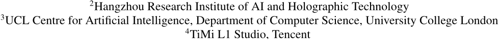

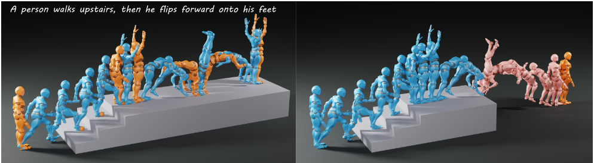
(b) Semantics-preserving Motion Editing
Figure 1. Our method enables motion generation (a) and editing (b) interactively with precise spatio-temporal control. (a) Text-conditioned Motion In-betweening: Given textual descriptions, keyframes (orange), and sparse keyjoint signals (orange spheres), our method can generate motions (blue) that strictly satisfy the spatio-temporal constraints and align well with textual semantics. (b) Semantics-preserving Motion Editing: Given the source motion generated from (a) and a keyframe (orange) specifying the local modifications (e.g., placing the character on the ground and lowering the hands in the last frame), our method produces coherent edited motions, comprising modified segments (pink) that satisfy the target constraints while preserving the original flip forward semantics, and unmodified segments (blue) that retain the original motion. Frames are slightly spaced for visualization.
Abstract
Text-conditioned human motion in-betweening leverages keyframes for spatio-temporal control, with text providing high-level semantic guidance for the transitions. However, existing methods are unable to establish a coherent alignment between textual semantics and the spatio-temporal constraints provided by keyframes, often resulting in insufficiently constrained motions with unintended behavior. Moreover, they struggle with precise spatial control, often generating motions that deviate from keyframe constraints. To address these issues, we propose a multi-level diffusion framework that integrates textual semantics with implicit cues from keyframe sequences to modulate global motion dynamics, while leveraging individual keyframes to guide local transitions around them. During inference, to ensure strict keyframe adherence, we propose a novel trajectory refinement strategy that adjusts the root positions of the generated motion, followed by diffusion imputation to refine the poses of the generated keyframes. Additionally, our framework enables semantics-preserving motion editing, allowing for plausible modifications while retaining the original motion semantics. Extensive experiments demonstrate that our method generates high-quality motions that strictly satisfy keyframe constraints while achieving precise semantic alignment.
*Corresponding author.
1. Introduction
Text-driven human motion generation leverages the versatility of natural language to provide semantic control, enabling efficient and intuitive motion authoring. Yet, text cannot explicitly specify precise timing or pose, often leading to temporal and spatial ambiguities. While keyframes can resolve these ambiguities by providing precise spatiotemporal constraints, they are inefficient for semantic guidance; relying on them alone to define motion semantics requires a large number of keyframes, which is a demanding and time-consuming manual task. This motivates us to unify text and keyframes for intuitive semantic guidance and precise spatio-temporal control.
Recent controllable motion generation methods [9, 35] have moved toward this direction by incorporating spatial constraints into text-conditioned motion generation. However, there are two key limitations that hinder the practical adoption of these methods. First, they capture only highlevel motion semantics (e.g. the categories and ordering of actions within the entire motion sequence) provided by text, without effectively aligning the implicit temporal and spatial cues provided by keyframes. Thus, these methods are limited in controlling low-level motion semantics (e.g. precise timing and subtle pose characteristics), often producing insufficiently constrained motions that deviate from the artist's creative intent (see Fig. 2). Second, they treat keyframes as soft rather than hard constraints, often resulting in motions with noticeable deviations from the spatial constraints (see Fig. 2). Consequently, further processing is needed, because artist-specified keyframes typically define critical spatial relationships (e.g. foot-ground contacts or character-object grasps) and these relationships need to be strictly satisfied, as even minor deviations can cause physical implausibility, hence leading to visual unrealism [8].
To bridge these gaps, we aim to develop a textconditioned motion in-betweening method that ensures strict spatio-temporal adherence and precise multi-level semantic control. However, this objective presents two challenges. The first is to generate diverse, text-guided motion transitions while strictly adhering to keyframes. Enforcing strict spatio-temporal constraints may restrict the transitions to a deterministic interpolation, leading to misalignment with the textual semantics, whereas focusing excessively on textual semantics may produce motions that deviate from the keyframes. The second challenge lies in effectively integrating textual and keyframe guidance for precise multi-level semantic control. Text provides explicit, highlevel semantic guidance, whereas keyframes specify critical timing through a sparse set of poses, refining the overall textual semantics into detailed guidance for transitions between keyframes. Insufficient coordination between the two complementary guidance modalities inevitably leads to control ambiguities.
To address these challenges, we propose a multi-level diffusion framework that combines precise spatio-temporal constraints with multi-level semantic control (see Fig. 1 (a)). Specifically, we introduce a multi-level guidance mechanism within the diffusion model, together with a re- A person picks up a large object, carries it overhead, and walks to the target finement strategy that adjusts motion during inference to ensure adherence to keyframes. This guidance mechanism operates on two levels: local guidance leverages individual keyframes to guide local transitions around them and facilitate spatial alignment, whereas global guidance integrates textual semantics with implicit cues from the keyframe sequence to provide semantic control. To guarantee strict keyframe adherence during inference, we introduce a novel trajectory refinement strategy that adjusts the root positions of the generated motion. This is followed by diffusion imputation, which refines the poses of the generated keyframes to ensure that they precisely meet the requirements defined by the artists.
![Figure 2. Limitations of previous text-conditioned motion inbetweening methods. The artist specifies the intended motion semantics through text and keyframes (orange), with keyframes 2-4 (from right) indicating three distinct stages: "picking up", "carrying overhead", and "walking to the target". However, existing approaches [9] exhibit two critical limitations: (a) Lacking lowlevel semantic control, as the generated transition (blue) redundantly performs the "picking up" action after the timing set by the keyframe, and fails to maintain the keyframe-specified "carrying overhead" posewhilewalking. (b) Lacking precise keyframe adherence, demonstrated by the generated motion at the constrained frame (pink) deviating significantly from the target.](assets/0019-picture.png)
Additionally, by unifying semantic and spatio-temporal control, our learned diffusion model naturally supports semantics-preserving motion editing-a key capability for interactive authoring (see Fig. 1(b)). In these interactive authoring scenarios, artists iteratively refine local motion segments through precise spatio-temporal constraints while maintaining the original motion semantics. Unfortunately, learning to preserve motion semantics is a challenge due to the lack of paired data. We address this challenge through a training-free invert-and-sample process. Specifically, the original motion is inverted to a latent representation, which is then refined by the denoising process to satisfy editing constraints while preserving original semantics.
We evaluate our method through extensive experiments, and the contributions of our work can be summarized as follows:
· A multi-level diffusion framework for text-conditioned motion in-betweening that achieves precise spatiotemporal alignment and multi-level semantic control.
· A multi-level guidance and refinement method that effectively integrates textual semantics with implicit semantic cues derived from keyframes, while enforcing strict keyframe adherence.
· A training-free motion editing method that enables plausible modifications while preserving original semantics.
2. Related Work
2.1. Motion In-betweening
In-between motion generation has long been a fundamental challenge in computer graphics and animation [50]. Learning-based online motion in-betweening methods [14, 15, 40, 43, 44] generate short motion transitions between given keyframes in an auto-regressive manner, yet often produce implausible transitions under long-term spatiotemporal constraints. In contrast, offline approaches leveraging transformer architectures [1, 2, 4, 28, 36, 49] enhance temporal coherence through attention-based modeling. Building upon these advancements, diffusion-based models [31, 41] further push the boundaries of realism and controllability. Nevertheless, these approaches require a large number of keyframes for unambiguous semantic guidance, which is a demanding and time-consuming task.
2.2. Text-driven Human Motion Generation
Text-driven human motion generation enables flexible control over motion semantics. Early methods [3, 32, 46] align text and motion in a unified latent space, but struggle to generate high-quality motions from complex multi-action descriptions. Recent diffusion-based approaches [7, 18, 24, 42, 47, 51] achieve better semantic alignment through more precise text-to-motion mapping. An alternative approach involves generating motion in discrete token spaces using autoregressive methods [53] or generative masked modeling techniques [13, 34]. However, text alone lacks the spatial precision required for animation production. To address this limitation, several works incorporate additional spatial guidance [20, 27, 38, 48, 52], grounding characters in their surroundings. To generate high-fidelity motion under dense spatial constraints, the masked generative framework [35] refines motion tokens via spatial guidance, while time-agnostic motion control [19] further enhances control flexibility. Beyond joint-level manipulation, keyframebased methods [9] combine sparse spatio-temporal constraints with textual guidance. Nevertheless, these methods are limited in controlling low-level motion semantics and fail to achieve strict spatial adherence.
2.3. Motion Editing
Human motion editing aims to modify motion data to achieve desired poses, trajectories, or behaviors. Early approaches [16] optimize within a learned motion manifold to modify motion characteristics, but are limited to domainspecific motions. Recent advances in text-conditioned diffusion models enable controllable editing through various strategies, such as refining textual prompts [22, 54], applying predefined operators on keyframes [11], optimizing with diffusion noise latent [21], or modulating learned textmotion correspondences [6, 17]. A dedicated dataset has also been introduced [5] to facilitate text-based motion editing [23]. Despite these efforts, these methods generally lack precise control over joint positions, which reduces their efficiency in practical applications. Some studies address this by constructing paired datasets for pose- or joint-level editing [1, 2] or regenerating unsatisfactory keyframes [55]. However, they may compromise the original motion semantics during editing, resulting in unintended modifications.
3. Text-conditioned Motion In-betweening
Fig. 3 shows an overview of our text-conditioned motion in-betweening method. Given a text prompt and a set of keyframes, we aim to generate a realistic motion sequence that strictly satisfies spatio-temporal constraints while aligning with the motion semantics derived from text and keyframes. To achieve this, we train a multi-level diffusion model that integrates textual semantics with the keyframe sequence to jointly modulate global motion dynamics and local motion patterns (Sec. 3.1). During inference, to further ensure strict keyframe adherence, we propose a trajectory adjustment strategy, followed by diffusion imputation to enforce spatial consistency (Sec. 3.2).
3.1. Multi-level Diffusion Model
Our diffusion model is built on a Conv1D U-Net backbone [20], conditioned on textual prompts and keyframe constraints. To encode the text condition, we tokenize the input prompt p using a pre-trained CLIP encoder [37], and compress the resulting tokens into a fixed-length text feature via a transformer. Meanwhile, we represent the spatiotemporal constraints using a feature matrix K ∈ RN×D , where unconstrained entries are set to zero. A binary mask mK ∈ {0, 1}N×D further specifies which joint features are constrained at each frame. Here, N and D correspond to the motion sequence length and feature dimension, respectively. We then concatenate K and mK along the feature dimension and feed the results into an MLP layer to obtain a keyframe embedding ek ∈ RN×Dk , which captures frame-level keyframe patterns.
Text provides high-level semantic guidance over the entire motion sequence, whereas keyframes specify critical timing through a set of poses, influencing both local motion dynamics and global temporal structure. Motivated by this, we propose a multi-level guidance mechanism, where local guidance leverages individual keyframes to refine framelevel motion patterns, and global guidance integrates textual semantics and keyframe sequence cues to provide semantic control that modulates overall motion dynamics.
![Figure 3. Overview of our text-conditioned motion in-betweening method. Given a text prompt, a set of keyframes, and a keyframe mask, our model generates a motion sequence that aligns with spatio-temporal constraints and motion semantics derived from text and keyframes. The framework consists of four components: (a) Condition Encoding encodes text and keyframe inputs; (b) Local Guidance incorporates keyframe embedding with noisy motion feature to guide local transitions around keyframes; (c) Global Guidance integrates text and keyframe features to modulate global motion dynamics; and (d) Inference Refinement enforces precise spatial adherence through trajectory and pose refinement. Here, (cf) and (ct) denote concatenation along the feature dimension and token dimension, respectively.](assets/0038-picture.png)
For local guidance, we project the noisy feature xt through an MLP and concatenate it with the corresponding keyframe embeddings ek at each frame. The fused feature is then fed into the U-Net backbone, allowing the convolutional operations to adaptively modulate local variations around the keyframes for precise spatial alignment.
For global guidance, our goal is to construct a unified representation that integrates textual semantics with keyframe cues, enabling coherent semantic control over global motion dynamics. As keyframes typically form a sparse sequence with long-range temporal dependencies,
we adopt a Keyframe Transformer Encoder (see Fig. 4)
to capture their global spatio-temporal structure. Specif-
ically, we concatenate the keyframe embeddings ek with a learnable token and add positional encoding to indicate temporal order. The keyframe mask mK is applied to filter out the masked embeddings, and the resulting sequence is processed by the Transformer. The output embedding corresponding to the learnable token serves as the compact, fixed-length keyframe feature, which is then concatenated with the text feature to form a unified global feature. Inspired by [18], we inject the global feature into the UNet backbone via a cross-attention scheme, where the noisy motion features (query) attend to the global feature (key and value). This enables the backbone to selectively integrate multi-level semantics from the unified global feature, which combines textual intent with keyframe sequence cues to guide global motion dynamics.

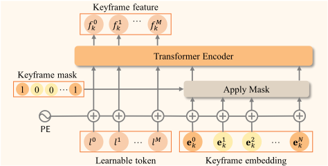
Following the formulation of [47], our diffusion model predicts the clean motion ˆx0 from the noisy input xt, i.e., ˆx0 = pθ (xt, t, c), where xt denotes the noisy motion at diffusion step t, c represents the text and keyframe conditions, and pθ is the learned model. Additional training details are provided in the Supplementary Material.
3.2. Inference Refinement
Due to the stochasticity of the diffusion process, the generated motion may exhibit spatial deviations from the keyframe constraints. As all joints are defined relative to the root joint, aligning the root trajectory with keyframes can effectively mitigate spatial deviations. To this end, we introduce two refinement strategies: (i) root trajectory refinement for global positional alignment, and (ii) imputationbased refinement for local pose alignment.
Trajectory refinement. Trajectory refinement explicitly adjusts the root trajectory of the entire sequence to satisfy target constraints. Previous methods [52] employ iterative gradient optimization to minimize root positional error. However, with a velocity-based root representation, the gradient from a single frame's error propagates uniformly across all preceding root velocities, leading to a misalignment between the root velocities and the non-uniform motion dynamics, compromising motion realism. For example, uniformly adjusting root velocities in a walk-to-sit sequence may cause the root to drift while the body remains seated.
We further find that unnatural motion, particularly footskating artifacts, arises from a misalignment between the adjusted trajectory and the original foot contact pattern (e.g., the timing and duration of foot-ground contact). For instance, the feet remain in contact with the ground while the root continues to drift. To minimize this misalignment, we need to identify and preserve a characteristic of the root trajectory that governs the contact pattern. We draw inspiration from the finding [45] that the root speed trend, characterized by its relative proportionality, is a primary determinant of contact pattern. Therefore, we aim to preserve this relative speed proportionality to avoid non-negligible foot-skating during trajectory adjustment.
To achieve this, we propose an autoregressive strategy that operates on motion segments between keyframes. We apply this refinement only during the last denoising steps, when the predicted ˆx0 matches the target closely. For the ith segment between the keyframes Ki-1 (at frame ni-1) and Ki (at frame ni), assuming that the root position of predicted ˆx0 at frame ni-1 already aligns with its target, we compute the root position error at frame ni as:

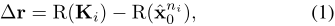
where R(·) extracts 3D root positions. To correct this error, we decompose the correction into its x, y, and z components and distribute each component across frames in proportion to the root speed. Given the predicted root velocity ˆvn = R(ˆxn+1 0 ) - R(ˆxn0 ) , we calculate the correction weight wn,d for each frame and dimension d ∈ {x, y, z} as:

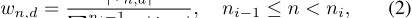
where ˆvn,d is the d-component of ˆvn. The adjusted velocity ˜vn is then derived by applying the weighted correction:

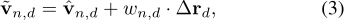
where ∆rd is the d-component of ∆r. The refined root positions ˜rn for each frame are obtained by integrating the adjusted velocities starting from the keyframe Ki-1:

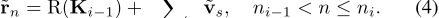

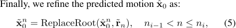
where ReplaceRoot(x, r) replaces the root position of frame x with r.
This strategy ensures the refined trajectory reaches keyframe targets by distributing corrections proportionally to root speed, thereby minimizing misalignment with the original contact pattern. For instance, in a walk-to-sit transition, frames where the character is stationary have negligible root displacement and therefore receive only minimal adjustment, preventing foot-skating artifacts.
Pose refinement. While trajectory refinement corrects the global root positions, it does not ensure that the generated poses exactly match the user-specified keyframes. To enforce local pose alignment with keyframes, we further apply diffusion imputation [26]. Specifically, after trajectory refinement, the predicted motion ˜x0 is updated with the keyframe feature matrix K using the keyframe mask mK:

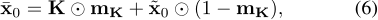
where ⊙ denotes the Hadamard product. This refined estimate ¯x0 is then used to derive xt-1 for the subsequent denoising step. By iteratively applying this refinement throughout the denoising process, we ensure that the final output x0 strictly adheres to keyframe constraints while remaining realistic.
4. Semantics-preserving Motion Editing
Formally, the semantics-preserving motion editing task is defined as follows: given an original motion sequence x0 and keyframe constraints K that specify modifications to specific frames, the goal is to generate an edited motion that (i) strictly satisfies the keyframe constraints and (ii) preserves the original semantics of x0.
To achieve this, we leverage our generative diffusion model through an invert-and-sample process: The original motion is first inverted to a latent noise sequence xT using DDIM inversion [39]. The resulting latent serves as the starting point for the denoising process guided by the keyframe targets, producing motion that satisfies the constraints. Following [10, 29], we further leverage the fixedpoint iteration technique to preserve the semantics of the original sequence better. Since the DDIM process is nearly reversible for small steps, the denoising path closely follows the inversion trajectory. This allows the latents in the denoising process to retain essential semantic cues such as actions, timing, and pose characteristics, enabling the edited motion to preserve motion semantics. Furthermore, our method enables strict keyframe adherence, which is crucial for precise local editing. For instance, to keep a motion segment unmodified, an artist can designate all frames within this segment as keyframes. Our approach then strictly enforces these constraints while plausibly re-synthesizing the modified motion parts.

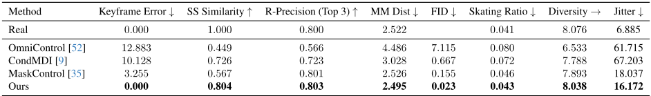
Recognized table text (check against the image)
| Method | Keyframe Error ↓ | SS Similarity ↑ | R-Precision (Top 3) ↑ | MMDist ↓ | FID ↓ | Skating Ratio ↓ | Diversity→ | Jitter ↓ |
|---|---|---|---|---|---|---|---|---|
| Real | 0.000 | 1.000 | 0.800 | 2.522 | 0.041 | 8.076 | 6.885 | |
| OmniControl [52] | 12.883 | 0.449 | 0.566 | 4.486 | 7.115 | 0.080 | 6.533 | 61.715 |
| CondMDI [9] | 10.128 | 0.726 | 0.723 | 3.028 | 0.667 | 0.072 | 7.788 | 67.203 |
| MaskControl [35] | 3.255 | 0.567 | 0.801 | 2.526 | 0.155 | 0.046 | 7.893 | 18.037 |
| Ours | 0.000 | 0.804 | 0.803 | 2.495 | 0.023 | 0.043 | 8.038 | 16.172 |
5. Evaluation
Dataset. We conduct experiments on the HumanML3D dataset [12], a large-scale collection of text-annotated human motions. Following [25], we re-extract motions in SMPL-X format [30], resample them to 30 FPS, and retain sequences of 2-10 seconds (60-300 frames). Each sequence is represented using a 22-joint skeleton [12], and transformed to our representation, which consists of three components: (i) a global root component capturing the translation and rotation of the root in world space; (ii) a local pose component including joint positions relative to the root, joint rotations relative to parent joints, and foot-ground contact labels; and (iii) a body shape component parameterized by the SMPL-X shape parameters.
5.1. Text-conditioned Motion In-betweening
Evaluation metrics. We evaluate text-conditioned motion in-betweening on four criteria: spatial control accuracy, semantic alignment, motion quality, and diversity. Spatial control accuracy is measured by Keyframe Error [9], computed as the mean per-joint Euclidean distance (cm) between the generated keyframes and input keyframe constraints. Motion quality is assessed using the Fr´echet Inception Distance (FID), foot skating ratio, and motion jitter (in 10m/s3 ). Diversity measures the variability following [47].
Semantic alignment is evaluated at two levels. First, we quantify high-level alignment with the text prompt using Motion-retrieval Precision (R-Precision) and Multimodal Distance (MM Dist) following [47]. These metrics leverage pre-trained models to map motion and coarse-grained text into a shared semantic space, which captures high-level semantics such as action categories, but overlooks low-level motion semantics such as precise timing.
To evaluate the low-level semantic alignment, we propose a novel Segment-level Semantic Similarity (SS Similarity) metric, which quantifies the semantic similarity between a generated inter-keyframe transition (i.e. the motion segment between two consecutive keyframes) and its corresponding ground-truth motion segment. Specifically, we use a pre-trained TMR model [33] to embed both the generated and ground-truth motion segments into its learned semantic space and compute their cosine similarity. A higher score indicates greater semantic similarity between the two segments, suggesting that the generated motion closely follows the low-level timing specified by the keyframes. This correlation is validated in the Supplementary Material.
Baselines. We compare our method with text- and spatiotemporally conditioned baselines, including CondMDI [9], OmniControl [52], MaskControl [35], and SFControl [19]. Since SFControl is a keyjoint-specific method, we only compare with it on the partial joint control task. We report the mean metrics over 20 generation runs for each test sample. Details for metrics and baselines are provided in the Supplementary Material.
5.1.1. Keyframe In-betweening
We conduct quantitative and qualitative comparisons with the baselines on the keyframe in-betweening task. For quantitative evaluation, we select the first, last, and five randomly sampled intermediate frames from the ground truth motions as keyframe constraints, along with their corresponding paired descriptions as text conditions. The results presented in Tab. 1 demonstrate that our method strictly adheres to keyframe constraints (0 cm Keyframe Error), significantly enhances low-level semantic alignment (as measured by SS Similarity), and achieves superior motion quality (as measured by FID, Skating Ratio, and Jitter). In contrast, all baselines struggle with spatial precision. Optimization-guided methods such as OmniControl and MaskControl treat keyframes merely as spatial objectives, ignoring their semantic cues, leading to poor SS Similarity.
Qualitative results in Fig. 5 further illustrate the effectiveness of our approach. In Fig. 5 (a), our model generates a smooth run-to-walk transition aligned with keyframe timing, while OmniControl and MaskControl instead decelerate and resume running, resulting in semantic inconsistency. In Fig. 5 (b), our method accurately captures the subtle "carrying" pose implied by the keyframe, thereby preserving the object-interaction dynamics. In contrast, CondMDI redundantly performs the "picking up" action after the timing set by the keyframe, and OmniControl and MaskControl fail to maintain the keyframe-specified "carrying" pose while "walking to the target". In addition, all baselines exhibit noticeable spatial deviations (highlighted by orange boxes), resulting in physically implausible motions when interacting with objects. Please refer to the supplementary video time Ours OmniControl CondMDI

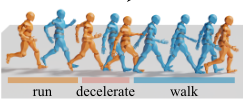

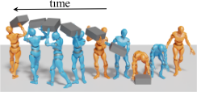

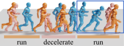

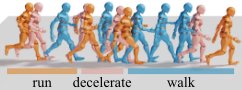

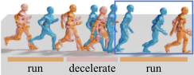

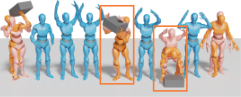

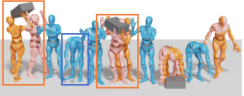

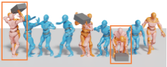
MaskControl
Figure 5. Qualitative results of text-conditioned motion in-betweening. We visualize the keyframe constraints as orange frames, the corresponding generated keyframes in pink, and the generated transitions as blue frames. Our method strictly adheres to the constraints, exhibiting perfect overlap between the targets (orange) and generations (pink), whereas other methods display non-negligible spatial deviations (orange boxes) and semantic inconsistencies (blue boxes). Please refer to the supplementary video for the complete motion sequences.
for additional qualitative results.
5.1.2. Robustness to Keyframe Sparsity
We evaluate our method's robustness to varying keyframe sparsity. Specifically, we select K ∈ {0, 5, 10, 20} random intermediate keyframes along with the first and last frames as keyframe constraints. Notably, the keyframes are extremely sparse when K = 0, with the maximum interval reaching 298 frames (9.93 seconds). As shown in Tab. 2, our method maintains strong high-level semantic alignment (R-Precision) across all settings, while SS Similarity increases and FID decreases with denser keyframes. This trend suggests that denser constraints enhance the generated motion's alignment with the ground truth, both in low-level semantics and overall motion distribution.

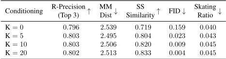
Recognized table text (check against the image)
| Conditioning | R-Precision (Top 3) ↑ | MM Dist ↓ | SS Similarity ↑ | FID ↓ | Skating Ratio ↓ |
|---|---|---|---|---|---|
| K = 0 | 0.796 | 2.539 | 0.719 | 0.159 | 0.040 |
| K = 5 | 0.803 | 2.495 | 0.804 | 0.023 | 0.043 |
| K = 10 | 0.803 | 2.506 | 0.820 | 0.009 | 0.045 |
| K = 20 | 0.802 | 2.513 | 0.833 | 0.004 | 0.045 |
5.1.3. Partial Joint Control
We further evaluate our method on the partial joint control task. In this setting, we apply constraints to the root (pelvis) and a random subset of end-effectors (i.e., head, hands, and feet) at five randomly sampled frames. As shown in Tab. 3, our method demonstrates exact adherence to spatial constraints. Furthermore, it outperforms all baselines in semantic consistency (R-Precision, MM Dist), while matching the state-of-the-art Skating Ratio and achieving comparable FID, showcasing its effectiveness and versatility in sparse and partial joint control scenarios.

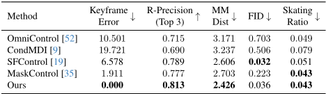
Recognized table text (check against the image)
| Method | Keyframe Error ↓ | R-Precision (Top 3) ↑ | MM Dist ↓ | FID ↓ | Skating Ratio ↓ |
|---|---|---|---|---|---|
| OmniControl [52] | 10.501 | 0.715 | 3.171 | 0.703 | 0.049 |
| CondMDI [9] | 19.721 | 0.690 | 3.237 | 0.506 | 0.079 |
| SFControl [19] | 6.578 | 0.789 | 2.606 | 0.032 | 0.051 |
| MaskControl [35] | 1.911 | 0.777 | 2.703 | 0.223 | 0.043 |
| Ours | 0.000 | 0.813 | 2.426 | 0.036 | 0.043 |
5.1.4. Ablation Study
We conduct an ablation study to evaluate the contribution of each component. To assess multi-level guidance, we introduce two auxiliary metrics computed between the generated keyframes and targets: (i) Keyframe Pose Error (KPE), which calculates the joints' positional error within the root's local coordinate system, and (ii) Keyframe Root Error (KRE), which measures the root position error in world space. The results are shown in Table 4.
High-level text guidance is enabled in all settings. Accordingly, Local Guidance applies local keyframe guidance, whereas Global Guidance integrates the keyframe sequence with the text for comprehensive global guidance. Applying global keyframe guidance alone (GloG) yields the worst performance on spatial accuracy, while achieving reasonable results on R-Precision and SS Similarity. Local keyframe guidance alone (LocG) yields motions with competitive FID scores, yet spatial accuracy remains unsatisfactory. Combining global and local guidance (LocG+GloG) outperforms either alone across all metrics. This improvement is attributed to two complementary roles: global guidance modulates overall motion dynamics based on the textual semantics and the spatio-temporal distribution of keyframes, while local guidance guides local transitions around keyframes. Adding Trajectory Refinement

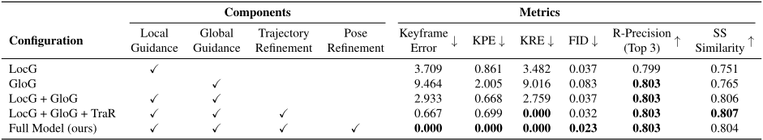
Recognized table text (check against the image)
| Components | Metrics | ||||||||||
|---|---|---|---|---|---|---|---|---|---|---|---|
| Configuration | Local Guidance | Global Guidance | Trajectory Refinement | Pose Refinement | Keyframe Error | ↓ | KPE ↓ | KRE ↓ | FID ↓ | R-Precision (Top 3) ↑ | SS Similarity ↑ |
| LocG | ✓ | 3.709 | 0.861 | 3.482 | 0.037 | 0.799 | 0.751 | ||||
| GloG | ✓ | 9.464 | 2.005 | 9.016 | 0.083 | 0.803 | 0.765 | ||||
| LocG + GloG | ✓ | ✓ | 2.933 | 0.668 | 2.759 | 0.037 | 0.803 | 0.806 | |||
| LocG + GloG + TraR | ✓ | ✓ | ✓ | 0.667 | 0.699 | 0.000 | 0.032 | 0.803 | 0.807 | ||
| Full Model (ours) | ✓ | ✓ | ✓ | ✓ | 0.000 | 0.000 | 0.000 | 0.023 | 0.803 | 0.804 | |
(LocG+GloG+TraR) further enforces root trajectory alignment with keyframe constraints, and Fig. 6 illustrates its superiority over imputation alone and the uniform velocity adjustment approach. Finally, our complete model (Full model) integrates Pose Refinement to ensure strict keyframe adherence, achieving the closest alignment between generated and ground truth motion distributions, leading to the best FID score.
5.2. Motion Editing
We further evaluate our method on keyframe-based motion editing, which involves modifying a source motion to satisfy sparse keyframe constraints (1-5 frames) while preserving its original motion semantics. We first select 122 semantically similar motion pairs from the HumanML3D test set as test data. To simulate a practical motion authoring workflow, we assess two editing scenarios. For local pose editing, we replace the pose at randomly selected source keyframes with the corresponding pose from the paired target motion, while keeping the original (x, z) root placement unchanged. For trajectory editing, we modify the keyframe's root position by scaling its (x, z) displacement relative to the first frame using random factors sx, sz ∼ U[-1, 2]. This setting produces variations such as scaled displacement (when sx, sz > 0) and reversed motion directions (when sx, sz < 0). We compare our method with DNO [21], which performs editing by optimizing within the diffusion latent space. We evaluate motion quality (FID, Skating Ratio), spatial accuracy (Keyframe Error), and semantic preservation (Source Similarity, computed as the cosine similarity between the source and edited motions in the TMR semantic space). The results in Tab. 5 show that our method attains perfect spatial accuracy and superior motion quality and semantic preservation across both scenarios.

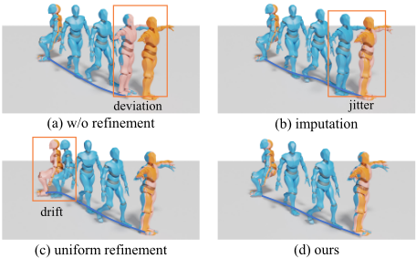
Figure 6. Ablation results on trajectory refinement. Without refinement, the generated keyframes deviate from the keyframe constraints; imputation alone introduces jitters between transitions (blue) and generated keyframes (pink); and uniformly distributing the root position error across frames leads to drifting artifacts. In contrast, our trajectory refinement aligns the root trajectory with the keyframe constraints while minimizing foot skating artifacts.

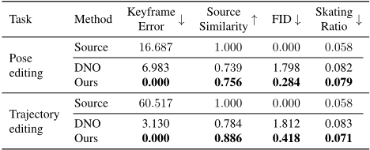
Recognized table text (check against the image)
| Task | Method | Keyframe Error ↓ | Source Similarity | ↑ FID ↓ | Skating Ratio ↓ |
|---|---|---|---|---|---|
| Pose editing | Source | 16.687 | 1.000 | 0.000 | 0.058 |
| DNO | 6.983 | 0.739 | 1.798 | 0.082 | |
| Ours | 0.000 | 0.756 | 0.284 | 0.079 | |
| Trajectory editing | Source | 60.517 | 1.000 | 0.000 | 0.058 |
| DNO | 3.130 | 0.784 | 1.812 | 0.083 | |
| Ours | 0.000 | 0.886 | 0.418 | 0.071 |
6. Limitations and Conclusions
In this work, we present a multi-level diffusion framework that unifies precise keyframe constraints with multi-level semantic control. The multi-level guidance mechanism jointly regulates global dynamics and local motion patterns, and our refinement strategy further enforces strict keyframe adherence. While the generated motion may deviate slightly from the text description when textual semantics conflict with the spatio-temporal constraints (e.g., a text prompt specifying a slow movement like "crawl", constrained by keyframes demanding a large displacement over a short transition duration), such conflicts are semantically implausible and are thus negligible in practice. In conclusion, our method strictly satisfies keyframe constraints and achieves state-of-the-art semantic alignment and motion quality.
Acknowledgments
Xiaogang Jin was supported by the National Natural Science Foundation of China (Grants: 62472373, U25A20440).
References
[1] Dhruv Agrawal, Martin Guay, Jakob Buhmann, Dominik Borer, and Robert W. Sumner. Pose and skeleton-aware neural IK for pose and motion editing. In SIGGRAPH Asia 2023 Conference Papers, pages 1-10, 2023. 3
[2] Dhruv Agrawal, Jakob Buhmann, Dominik Borer, Robert W Sumner, and Martin Guay. Skel-betweener: a neural motion rig for interactive motion authoring. ACM Transactions on Graphics (TOG), 43(6):1-11, 2024. 3
[3] Chaitanya Ahuja and Louis-Philippe Morency. Language2pose: Natural language grounded pose forecasting. In 2019 International Conference on 3D Vision (3DV), pages 719-728. IEEE, 2019. 3
[4] Elly Akhoundi, Hung Yu Ling, Anup Deshmukh, and Judith Butepage. Silk: Smooth interpolation framework for motion in-betweening a simplified computational approach. In 2025 IEEE/CVF Conference on Computer Vision and Pattern Recognition Workshops (CVPRW), pages 2891-2900. IEEE, 2025. 3
[5] Nikos Athanasiou, Alp´ar Cseke, Markos Diomataris, Michael J Black, and G¨ul Varol. Motionfix: Text-driven 3d humanmotion editing. In SIGGRAPHAsia 2024 Conference Papers, pages 1-11, 2024. 3
[6] Ling-Hao Chen, Shunlin Lu, Wenxun Dai, Zhiyang Dou, Xuan Ju, Jingbo Wang, Taku Komura, and Lei Zhang. Pay attention and move better: Harnessing attention for interactive motion generation and training-free editing. arXiv preprint arXiv:2410.18977, 2024. 3
[7] Xin Chen, Biao Jiang, Wen Liu, Zilong Huang, Bin Fu, Tao Chen, and Gang Yu. Executing your commands via motion diffusion in latent space. In Proceedings of the IEEE/CVF Conference on Computer Vision and Pattern Recognition, pages 18000-18010, 2023. 3
[8] Lo¨ıc Ciccone, Cengiz ¨Oztireli, and Robert W Sumner. Tangent-space optimization for interactive animation control. ACM Transactions on Graphics (TOG), 38(4):1-10, 2019. 2
[9] Setareh Cohan, Guy Tevet, Daniele Reda, Xue Bin Peng, and Michiel van de Panne. Flexible motion in-betweening with diffusion models. In ACM SIGGRAPH 2024 conference papers, pages 1-9, 2024. 2, 3, 6, 7
[10] Daniel Garibi, Or Patashnik, Andrey Voynov, Hadar Averbuch-Elor, and Daniel Cohen-Or. Renoise: Real image inversion through iterative noising. In European Conference on Computer Vision, pages 395-413. Springer, 2024. 5
[11] Purvi Goel, Kuan-Chieh Wang, C Karen Liu, and Kayvon Fatahalian. Iterative motion editing with natural language. In ACM SIGGRAPH 2024 Conference Papers, pages 1-9, 2024. 3
[12] Chuan Guo, Shihao Zou, Xinxin Zuo, Sen Wang, Wei Ji, Xingyu Li, and Li Cheng. Generating diverse and natural 3d
human motions from text. In Proceedings of the IEEE/CVF Conference on Computer Vision and Pattern Recognition, pages 5152-5161, 2022. 6
[13] Chuan Guo, Yuxuan Mu, Muhammad Gohar Javed, Sen Wang, and Li Cheng. Momask: Generative masked modeling of 3d human motions. In Proceedings of the IEEE/CVF Conference on Computer Vision and Pattern Recognition, pages 1900-1910, 2024. 3
[14] F´elix G Harvey and Christopher Pal. Recurrent transition networks for character locomotion. In SIGGRAPH Asia 2018 Technical Briefs, pages 1-4. 2018. 3
[15] F´elix G. Harvey, Mike Yurick, Derek Nowrouzezahrai, and Christopher J. Pal. Robust motion in-betweening. ACM Transactions on Graphics (TOG), 39(4):60, 2020. 3
[16] Daniel Holden, Jun Saito, and Taku Komura. A deep learning framework for character motion synthesis and editing. ACM Transactions on Graphics (TOG), 35(4):1-11, 2016. 3
[17] Seokhyeon Hong, Chaelin Kim, Serin Yoon, Junghyun Nam, Sihun Cha, and Junyong Noh. Salad: Skeleton-aware latent diffusion for text-driven motion generation and editing. In Proceedings of the IEEE/CVF Conference on Computer Vision and Pattern Recognition, pages 7158-7168, 2025. 3
[18] Yiheng Huang, Hui Yang, Chuanchen Luo, Yuxi Wang, Shibiao Xu, Zhaoxiang Zhang, Man Zhang, and Junran Peng. Stablemofusion: Towards robust and efficient diffusion-based motion generation framework. In Proceedings of the 32nd ACM International Conference on Multimedia, pages 224-232, 2024. 3, 4
[19] Inwoo Hwang, Jinseok Bae, Donggeun Lim, and YoungMin Kim. Motion synthesis with sparse and flexible keyjoint control. In Proceedings of the IEEE/CVF International Conference on Computer Vision, pages 13203-13213, 2025. 3, 6, 7
[20] Korrawe Karunratanakul, Konpat Preechakul, Supasorn Suwajanakorn, and Siyu Tang. Guided motion diffusion for controllable human motion synthesis. In Proceedings of the IEEE/CVF International Conference on Computer Vision, pages 2151-2162, 2023. 3
[21] Korrawe Karunratanakul, Konpat Preechakul, Emre Aksan, Thabo Beeler, Supasorn Suwajanakorn, and Siyu Tang. Optimizing diffusion noise can serve as universal motion priors. In Proceedings of the IEEE/CVF Conference on Computer Vision and Pattern Recognition, pages 1334-1345, 2024. 3, 8
[22] Chuqiao Li, Julian Chibane, Yannan He, Naama Pearl, Andreas Geiger, and Gerard Pons-Moll. Unimotion: Unifying 3d human motion synthesis and understanding. In 2025 International Conference on 3D Vision (3DV), pages 240-249. IEEE, 2025. 3
[23] Zhengyuan Li, Kai Cheng, Anindita Ghosh, Uttaran Bhattacharya, Liangyan Gui, and Aniket Bera. Simmotionedit: Text-based human motion editing with motion similarity prediction. In Proceedings of the IEEE/CVF Conference on Computer Vision and Pattern Recognition, pages 2782727837, 2025. 3
[24] Han Liang, Jiacheng Bao, Ruichi Zhang, Sihan Ren, Yuecheng Xu, Sibei Yang, Xin Chen, Jingyi Yu, and Lan Xu.
Omg: Towards open-vocabulary motion generation via mixture of controllers. In Proceedings of the IEEE/CVF Conference on Computer Vision and Pattern Recognition, pages 482-493, 2024. 3
[25] Jing Lin, Ailing Zeng, Shunlin Lu, Yuanhao Cai, Ruimao Zhang, Haoqian Wang, and Lei Zhang. Motion-x: A largescale 3d expressive whole-body human motion dataset. In Advances in Neural Information Processing Systems 36: Annual Conference on Neural Information Processing Systems 2023, NeurIPS 2023, New Orleans, LA, USA, December 10 - 16, 2023, 2023. 6
[26] Andreas Lugmayr, MartinDanelljan, Andr´es Romero, Fisher Yu, Radu Timofte, and Luc Van Gool. Repaint: Inpainting using denoising diffusion probabilistic models. In Proceedings of the IEEE/CVF Conference on Computer Vision and Pattern Recognition, pages 11451-11461. IEEE, 2022. 5
[27] Zichong Meng, Zeyu Han, Xiaogang Peng, Yiming Xie, and Huaizu Jiang. Absolute coordinates make motion generation easy, 2025. 3
[28] Clinton A Mo, Kun Hu, Chengjiang Long, and Zhiyong Wang. Continuous intermediate token learning with implicit motion manifold for keyframe based motion interpolation. In Proceedings of the IEEE/CVF Conference on Computer Vision and Pattern Recognition, pages 13894-13903, 2023. 3
[29] Gaurav Parmar, KrishnaKumar Singh, Richard Zhang, Yijun Li, Jingwan Lu, and Jun-Yan Zhu. Zero-shot image-to-image translation. In ACM SIGGRAPH 2023 conference proceedings, pages 1-11, 2023. 5
[30] Georgios Pavlakos, Vasileios Choutas, Nima Ghorbani, Timo Bolkart, Ahmed AA Osman, Dimitrios Tzionas, and Michael J Black. Expressive body capture: 3d hands, face, and body from a single image. In Proceedings of the IEEE/CVF Conference on Computer Vision and Pattern Recognition, pages 10975-10985, 2019. 6
[31] Jiawen Peng, Zhuoran Liu, Jingzhong Lin, and Gaoqi He. Precise motion inbetweening via bidirectional autoregressive diffusion models. Computer Animation and Virtual Worlds, 36(3):e70040, 2025. 3
[32] Mathis Petrovich, Michael J Black, and G¨ul Varol. Temos: Generating diverse human motions from textual descriptions. In European Conference on Computer Vision, pages 480497. Springer, 2022. 3
[33] Mathis Petrovich, Michael J Black, and G¨ul Varol. Tmr: Text-to-motion retrieval using contrastive 3d human motion synthesis. In Proceedings of the IEEE/CVF International Conference on Computer Vision, pages 9488-9497, 2023. 6
[34] Ekkasit Pinyoanuntapong, Pu Wang, Minwoo Lee, and Chen Chen. Mmm: Generative masked motion model. In Proceedings of the IEEE/CVF Conference on Computer Vision and Pattern Recognition, pages 1546-1555, 2024. 3
[35] Ekkasit Pinyoanuntapong, Muhammad Saleem, Korrawe Karunratanakul, Pu Wang, Hongfei Xue, Chen Chen, Chuan Guo, Junli Cao, Jian Ren, and Sergey Tulyakov. Maskcontrol: Spatio-temporal control for masked motion synthesis. In Proceedings of the IEEE/CVF International Conference on Computer Vision, pages 9955-9965, 2025. 2, 3, 6, 7
[36] Jia Qin, Youyi Zheng, and Kun Zhou. Motion in-betweening via two-stage transformers. ACM Transactions on Graphics (TOG), 41(6):184:1-184:16, 2022. 3
[37] Alec Radford, Jong Wook Kim, Chris Hallacy, Aditya Ramesh, Gabriel Goh, Sandhini Agarwal, Girish Sastry, Amanda Askell, Pamela Mishkin, Jack Clark, Gretchen Krueger, and Ilya Sutskever. Learning transferable visual models from natural language supervision. In ICML, pages 8748-8763. PMLR, 2021. 3
[38] Yoni Shafir, Guy Tevet, Roy Kapon, and Amit Haim Bermano. Human motion diffusion as a generative prior. In The Twelfth International Conference on Learning Representations, ICLR 2024, Vienna, Austria, May 7-11, 2024. OpenReview.net, 2024. 3
[39] Jiaming Song, Chenlin Meng, and Stefano Ermon. Denoising diffusion implicit models. In 9th International Conference on Learning Representations, ICLR 2021, Virtual Event, Austria, May 3-7, 2021. OpenReview.net, 2021. 5
[40] Paul Starke, Sebastian Starke, Taku Komura, and Frank Steinicke. Motion in-betweening with phase manifolds. Proceedings of the ACM on Computer Graphics and Interactive Techniques, 6(3):1-17, 2023. 3
[41] Justin Studer, Dhruv Agrawal, Dominik Borer, Seyedmorteza Sadat, Robert W Sumner, Martin Guay, and Jakob Buhmann. Factorized motion diffusion for precise and character-agnostic motion inbetweening. In Proceedings of the 17th ACM SIGGRAPH conference on motion, interaction, and games, pages 1-10, 2024. 3
[42] Haowen Sun, Ruikun Zheng, HaibinHuang, ChongyangMa, Hui Huang, and Ruizhen Hu. Lgtm: Local-to-global textdriven human motion diffusion model. In ACM SIGGRAPH 2024 Conference Papers, pages 1-9, 2024. 3
[43] Xiangjun Tang, He Wang, Bo Hu, Xu Gong, Ruifan Yi, Qilong Kou, and Xiaogang Jin. Real-time controllable motion transition for characters. ACM Transactions on Graphics (TOG), 41(4):1-10, 2022. 3
[44] Xiangjun Tang, Linjun Wu, He Wang, Bo Hu, Xu Gong, Yuchen Liao, Songnan Li, Qilong Kou, and Xiaogang Jin. Rsmt: Real-time stylized motion transition for characters. In SIGGRAPH '23 Conference Proceedings, pages 1-10, 2023. 3
[45] Xiangjun Tang, Linjun Wu, He Wang, Yiqian Wu, Bo Hu, Songnan Li, Xu Gong, Yuchen Liao, Qilong Kou, and Xiaogang Jin. Decoupling contact for fine-grained motion style transfer. In SIGGRAPH Asia 2024 Conference Papers, pages 1-11, 2024. 5
[46] Guy Tevet, Brian Gordon, Amir Hertz, Amit H Bermano, and Daniel Cohen-Or. Motionclip: Exposing human motion generation to clip space. In European Conference on Computer Vision, pages 358-374. Springer, 2022. 3
[47] Guy Tevet, Sigal Raab, Brian Gordon, Yonatan Shafir, Daniel Cohen-Or, and Amit Haim Bermano. Human motion diffusion model. In The Eleventh International Conference on Learning Representations, ICLR 2023, Kigali, Rwanda, May 1-5, 2023. OpenReview.net, 2023. 3, 4, 6
[48] Weilin Wan, Zhiyang Dou, Taku Komura, Wenping Wang, Dinesh Jayaraman, and Lingjie Liu. Tlcontrol: Trajectory
and language control for human motion synthesis. In European Conference on Computer Vision, pages 37-54, 2024. 3
[49] Zhiming Wang, Ning Ge, and Jianhua Lu. Motion inbetweening with spatial and temporal transformers. IEEE Transactions on Circuits and Systems for Video Technology, 2025. 3
[50] Andrew P. Witkin and Michael Kass. Spacetime constraints. In Proceedings of the 15th Annual Conference on Computer Graphics and Interactive Techniques, SIGGRAPH 1988, Atlanta, Georgia, USA, August 1-5, 1988, pages 159-168. ACM, 1988. 3
[51] Linjun Wu, Xiangjun Tang, Jingyuan Cong, He Wang, Bo Hu, Xu Gong, Songnan Li, Yuchen Liao, Yiqian Wu, Chen Liu, et al. Semantically consistent text-to-motion with unsupervised styles. In Proceedings of the Special Interest Group on Computer Graphics and Interactive Techniques Conference Conference Papers, pages 1-10, 2025. 3
[52] Yiming Xie, Varun Jampani, Lei Zhong, Deqing Sun, and Huaizu Jiang. Omnicontrol: Control any joint at any time for human motion generation. In The Twelfth International Conference on Learning Representations, ICLR 2024, Vienna, Austria, May 7-11, 2024. OpenReview.net, 2024. 3, 4, 6, 7
[53] Jianrong Zhang, Yangsong Zhang, Xiaodong Cun, Yong Zhang, Hongwei Zhao, Hongtao Lu, Xi Shen, and Ying Shan. Generating human motion from textual descriptions with discrete representations. In Proceedings of the IEEE/CVF Conference on Computer Vision and Pattern Recognition, pages 14730-14740, 2023. 3
[54] Mingyuan Zhang, Huirong Li, Zhongang Cai, Jiawei Ren, Lei Yang, and Ziwei Liu. Finemogen: Fine-grained spatiotemporal motion generation and editing. Advances in Neural Information Processing Systems, 36:13981-13992, 2023. 3
[55] Bowen Zheng, Ke Chen, Yuxin Yao, Zijiao Zeng, Xinwei Jiang, He Wang, Joan Lasenby, and Xiaogang Jin. Autokeyframe: Autoregressive keyframe generation for human motion synthesis and editing. In Proceedings of the Special Interest Group on Computer Graphics and Interactive Techniques Conference Conference Papers, pages 1-12, 2025. 3